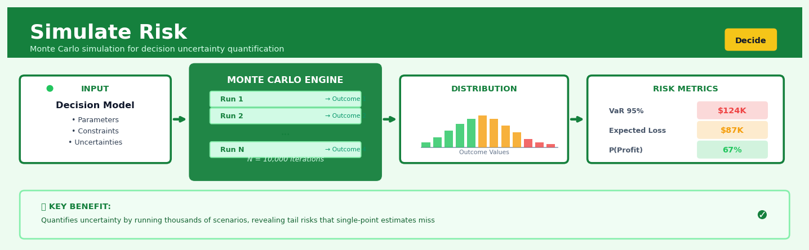

Simulate Risk#


The biggest mistake teams make with Monte Carlo simulation is running too few iterations and calling it done. You need at least 10,000 runs to get stable tail risk estimates, and honestly, with modern compute there's no excuse not to run 100,000. The difference between a 95th percentile estimate from 1,000 iterations versus 50,000 can be the difference between under-reserving by millions and actually being prepared for what the data is telling you.
The 60-Second Version#
What it does: Simulate Risk runs thousands of “what if” scenarios to show you the full range of possible outcomes—not just the average—when your inputs are uncertain.
When to use it: Use it when a single-number forecast feels dangerously misleading because key variables (demand, costs, market conditions) could swing in multiple directions.
What you get back: A probability distribution that tells you the odds of hitting targets, missing thresholds, or facing worst-case losses—so you can set reserves, choose strategies, or walk away from bad bets.
Difficulty |
Moderate |
Typical runtime |
Seconds for 10,000 scenarios |
What you bring |
A model (often a spreadsheet) with uncertain inputs defined as probability distributions |
What you get |
Probability curves showing likelihood of all outcomes, plus percentile estimates (10th, 50th, 90th) |
Heuristix bucket |
Decide — Decision Intelligence |
The one thing to remember: Monte Carlo shows you what could happen under your assumptions—garbage distributions in, garbage probabilities out.
Learning Objectives#
After reading this chapter, a business user will be able to:
Identify situations where point forecasts dangerously obscure risk—such as new product launches, capital projects with long lead times, or portfolio decisions—and articulate why Monte Carlo simulation is the appropriate analytical approach.
Read probability distribution outputs (histograms, percentile ranges, exceedance curves) and translate them into executive-ready narratives about upside potential, downside exposure, and the likelihood of meeting specific business targets.
Use simulation results to set contingency reserves, construct risk-adjusted business cases, and defend strategic recommendations by quantifying the probability and cost of adverse scenarios.
After reading this chapter, a data scientist will be able to:
Build end-to-end Monte Carlo simulations by selecting appropriate probability distributions for uncertain inputs, implementing correlation structures between variables, and generating representative scenario sets that preserve statistical properties.
Determine the optimal number of simulation runs by balancing convergence stability against computational cost, and select sampling methods (pure random, Latin hypercube, Sobol sequences) based on model complexity and dimensionality.
Detect and correct common pathologies including distribution misspecification, correlation errors, insufficient sample size, and model oversimplification by applying diagnostic tests, sensitivity analysis, and back-testing against historical outcomes.
Overview#
Simulate Risk is a Monte Carlo–based decision intelligence technique that quantifies uncertainty in business outcomes by generating thousands of plausible future scenarios from specified probability distributions. Its core purpose is to transform point estimates—which mask the inherent variability in forecasts—into full probability distributions over outcomes, enabling decision-makers to understand not just what might happen on average, but the likelihood and magnitude of extreme events. This technique belongs to the family of stochastic simulation methods and underpins modern enterprise risk management, capital allocation, and strategic planning under uncertainty.
When to Use This#
Use this when:
You need to quantify downside risk: When stakeholders ask “what’s the worst that could reasonably happen?” rather than “what’s the expected value?”, simulation provides tail risk metrics like Value at Risk (VaR) and Conditional Value at Risk (CVaR) that point estimates cannot deliver.
Multiple uncertain inputs interact nonlinearly: When your business model combines several random variables through multiplication, division, or conditional logic, analytical solutions become intractable and simulation offers a practical path to the output distribution.
You must stress-test a financial model: Before committing capital to a project, acquisition, or product launch, simulation reveals how sensitive your projected returns are to adverse combinations of input assumptions.
Regulatory or audit requirements demand probabilistic risk assessment: Basel III/IV for banks, Solvency II for insurers, and IFRS 17 all require firms to demonstrate understanding of risk distributions, not just expected outcomes.
You are optimising decisions under uncertainty: When choosing between strategic alternatives (e.g., build vs. buy, expand vs. contract), simulation lets you compare full outcome distributions rather than misleading single-point forecasts.
Historical data is sparse but expert judgement is available: Simulation allows you to encode expert beliefs as probability distributions and propagate that uncertainty forward, even when you lack thousands of historical observations.
You need to communicate uncertainty to non-technical stakeholders: Histograms and percentile tables are far more intuitive than variance-covariance matrices; simulation produces outputs that executives and boards can actually interpret.
Do NOT use this when:
You have a closed-form analytical solution: If your model is a linear combination of normally distributed inputs, the output distribution is known analytically—simulation adds computational cost without improving accuracy.
Input distributions are unknown and unknowable: Simulation is only as good as your distributional assumptions; if you cannot justify your input distributions, your outputs are illusory precision.
Real-time, low-latency decisions are required: Monte Carlo simulation is computationally intensive; for millisecond-level trading decisions, pre-computed lookup tables or approximations are more appropriate.
Questions This Answers#
Understanding Our Exposure#
What’s the realistic range of outcomes for next year’s revenue—not just the forecast number my team gave me?
If the market turns against us, how bad could our cash position get by Q3, and what’s the actual probability of that happening?
We’re projecting \(12M in cost savings from this initiative, but what are the odds we deliver less than \)8M?
How much capital do we really need to set aside to cover potential warranty claims over the next 24 months?
What’s the chance we’ll breach our debt covenants if two or three risk factors hit at once?
Making Better Decisions#
Should we commit to the fixed-price contract or the variable arrangement—which one protects our margins better when demand is uncertain?
We have $50M to allocate across five projects with different risk profiles—which portfolio gives us the best odds of hitting our 15% return target?
Is it worth spending $3M on supply chain redundancy, or are we overreacting to a one-time disruption?
Our competitor just slashed prices by 20%—do we match them now or wait it out, given our inventory position?
If we delay the product launch by two quarters to add features, does that improve or hurt our expected market share?
Planning for the Worst#
What’s our realistic worst-case scenario for this acquisition—not just worst case on paper, but something that could actually happen?
How many customer service reps do we need to hire to handle peak call volume with 95% confidence during the launch?
If fuel costs and labor inflation both spike next year, can we still break even, or do we need to rethink our pricing model?
How It Works#
Imagine you’re planning a summer wedding outdoors. The venue costs \(5,000 if it's sunny, but if it rains, you'll need to rent a tent for an extra \)3,000. Your friend confidently says “Don’t worry, it’ll probably be sunny”—but that single prediction doesn’t help you budget. What you really need to know is: if you run this wedding a thousand times with realistic weather patterns, how often do you blow your budget? Monte Carlo simulation is like fast-forwarding through all those possible wedding days, tracking what happens in each scenario, then showing you the full picture: maybe you stay under \(6,000 in 60% of scenarios, hit \)8,000 in 35%, and face a disaster scenario 5% of the time.
POINT ESTIMATE (traditional) MONTE CARLO SIMULATION
Input: Revenue = $500K Input: Revenue ~ Normal($500K, $50K)
Costs = $300K Costs ~ Uniform($280K, $350K)
↓ ↓
Simple calc: Run 10,000 scenarios:
Profit = $200K
Scenario 1: Rev=$487K, Cost=$312K → $175K
┌─────────────┐ Scenario 2: Rev=$523K, Cost=$291K → $232K
│ One answer: │ Scenario 3: Rev=$461K, Cost=$338K → $123K
│ $200K │ ...
└─────────────┘ Scenario 10,000: Rev=$508K, Cost=$305K → $203K
↓
┌────────────────────────────────┐
│ Distribution of 10K outcomes │
│ ▁▃▅▇█▇▅▃▁ │
│ $100K $200K $300K │
│ │
│ Mean: $198K │
│ 10th percentile: $142K │
│ 90th percentile: $251K │
│ Prob(Loss): 2.3% │
└────────────────────────────────┘
Step 1: Define the inputs and their uncertainties. Identify every variable that affects your outcome—revenue, costs, customer demand, project delays—and describe each not as a single number but as a range with a probability pattern. Revenue might be “normally distributed around \(500,000 with typical swings of plus-or-minus \)50,000,” while a regulatory delay might be “20% chance of zero days, 80% chance of uniformly spread between 30 and 90 days.”
Step 2: Generate one random scenario. The computer picks one plausible value for each uncertain input by randomly sampling from its probability distribution. Think of it as rolling weighted dice for each variable simultaneously—you get one complete “possible future” with specific numbers for every input.
Step 3: Calculate the outcome for that scenario. Run your normal business logic—your spreadsheet formulas, your project plan, your financial model—using this specific set of inputs. You get one concrete result: profit of $175,000, project completion on day 247, whatever your model calculates.
Step 4: Repeat thousands of times. Generate scenario two with a fresh random draw for each input, calculate its outcome, then do it again. And again. Modern computers run ten thousand scenarios in seconds, building a massive collection of possible futures.
Step 5: Analyze the distribution of outcomes. Now you have ten thousand profit numbers, completion dates, or whatever you’re measuring. Sort them, visualize them as a histogram, and calculate probabilities: What’s the average? How likely are you to miss your target? What’s the worst-case scenario you should prepare for?
The key insight: By exploring thousands of internally consistent futures rather than betting everything on one “best guess,” you transform ignorance into quantified risk—replacing false confidence with actionable probability.
The Intuition#
Imagine you are planning a hiking expedition in the mountains. You check the weather forecast, which tells you the expected temperature will be 15°C. Armed with this single number, you pack accordingly—but you fail to bring rain gear or warm layers. When you arrive, a cold front sweeps through and temperatures plummet to 3°C with heavy rain. The forecast was not wrong in expectation, but it completely masked the uncertainty that should have informed your preparation.
Risk simulation addresses exactly this problem. Instead of asking “what is the most likely outcome?”, it asks “what is the full range of outcomes, and how likely is each?” By generating thousands of plausible weather scenarios—some sunny, some rainy, some freezing—you could have seen that while 15°C was indeed the central tendency, there was a 10% chance of temperatures below 5°C. With that information, you would have packed differently.
In business, the stakes are higher. A capital investment might yield an expected net present value (NPV) of £2 million, but if there is a 15% chance the NPV falls below negative £5 million, that expected value tells an incomplete story. Risk simulation propagates uncertainty through your financial model, revealing the shape of the NPV distribution—its spread, its skewness, and crucially, its tails. This allows decision-makers to ask the right questions: “Can we survive the downside?” rather than “What’s the average?”
The power of simulation lies in its generality. Unlike analytical methods that require restrictive assumptions (linearity, normality, independence), Monte Carlo simulation handles arbitrary functional forms, complex dependencies, and fat-tailed distributions with equal ease. You simply specify how each uncertain input behaves, define how inputs combine to produce outputs, and let the computer generate scenarios. The law of large numbers guarantees that with enough samples, the simulated distribution converges to the true distribution—no calculus required.
The Mathematics#
Problem Setup and Notation#
Let \(\mathbf{X} = (X_1, X_2, \ldots, X_d)^\top\) denote a \(d\)-dimensional random vector of uncertain inputs, where each \(X_i\) follows a specified marginal distribution \(F_i\) with density \(f_i\). The dependence structure among inputs is captured by a copula \(C\) such that the joint distribution is:
Let \(g: \mathbb{R}^d \to \mathbb{R}\) be a measurable function representing the business model that maps inputs to an output of interest \(Y\):
Our objective is to characterise the distribution of \(Y\), including:
The expected value \(\mathbb{E}[Y]\)
The variance \(\text{Var}(Y)\)
Quantiles \(q_\alpha = F_Y^{-1}(\alpha)\) for risk thresholds \(\alpha \in (0,1)\)
Tail risk measures such as Value at Risk and Conditional Value at Risk
Monte Carlo Estimation#
The Monte Carlo method approximates expectations via sample averages. Draw \(N\) independent realisations \(\mathbf{X}^{(1)}, \mathbf{X}^{(2)}, \ldots, \mathbf{X}^{(N)}\) from the joint distribution \(F\), compute \(Y^{(n)} = g(\mathbf{X}^{(n)})\) for each, and estimate:
By the Strong Law of Large Numbers, this estimator is consistent. The Central Limit Theorem provides the asymptotic distribution:
where \(\sigma_Y^2 = \text{Var}(Y)\). The standard error of the estimate is therefore:
This implies that halving the standard error requires quadrupling the number of simulations—a fundamental limitation of naive Monte Carlo.
Value at Risk and Conditional Value at Risk#
Value at Risk at confidence level \(\alpha\) (typically 0.95 or 0.99) is the \(\alpha\)-quantile of the loss distribution. If \(L = -Y\) represents losses:
The Monte Carlo estimator is the sample quantile:
where \(L_{(k)}\) denotes the \(k\)-th order statistic of the simulated losses.
Conditional Value at Risk (also called Expected Shortfall) measures the expected loss conditional on exceeding VaR:
The Monte Carlo estimator is:
CVaR is a coherent risk measure (satisfying subadditivity, positive homogeneity, translation invariance, and monotonicity), whereas VaR is not.
Correlation and Copula Modelling#
When inputs are dependent, we must sample from the joint distribution \(F\). The Gaussian copula approach proceeds as follows:
Specify a correlation matrix \(\mathbf{R}\) for the latent Gaussian variables
Generate \(\mathbf{Z}^{(n)} \sim \mathcal{N}(\mathbf{0}, \mathbf{R})\) using Cholesky decomposition: \(\mathbf{Z} = \mathbf{L}\mathbf{W}\) where \(\mathbf{R} = \mathbf{L}\mathbf{L}^\top\) and \(\mathbf{W} \sim \mathcal{N}(\mathbf{0}, \mathbf{I})\)
Transform to uniform marginals: \(U_i = \Phi(Z_i)\)
Apply inverse marginal CDFs: \(X_i = F_i^{-1}(U_i)\)
This preserves the rank correlation structure while allowing arbitrary marginal distributions.
Assumptions#
The validity of risk simulation rests on several assumptions:
Correct specification of marginal distributions: If \(F_i\) is misspecified, all downstream inference is compromised
Correct specification of dependence structure: The copula must capture how inputs co-move, especially in the tails
Stationarity: The distributional assumptions must remain valid over the forecast horizon
Model validity: The function \(g\) must accurately represent the true data-generating process
Sufficient sample size: \(N\) must be large enough for estimator convergence
Variance Reduction Techniques#
To improve efficiency, several variance reduction methods can be employed:
Antithetic variates: For each draw \(\mathbf{U}^{(n)}\), also evaluate \(g\) at \(\mathbf{1} - \mathbf{U}^{(n)}\). If \(g\) is monotonic in its inputs, this induces negative correlation between paired samples, reducing variance.
Latin Hypercube Sampling (LHS): Partition each marginal into \(N\) equiprobable intervals and ensure exactly one sample falls in each interval. This guarantees better coverage of the input space:
where \(\pi_i\) is a random permutation of \(\{1, 2, \ldots, N\}\) and \(U_i^{(n)} \sim \text{Uniform}(0,1)\).
Convergence Diagnostics#
The standard error of \(\widehat{\text{VaR}}_\alpha\) can be approximated using order statistic theory:
where \(f_L\) is the density of the loss distribution at the quantile. Note that in regions of low density (fat tails), the standard error can be substantial even with large \(N\).
Understanding the Mathematics#
Understanding the Mathematics#
The Expected Value of a Simulated Outcome#
The equation:
Read it aloud:
“The expected value of our outcome equals one divided by the total number of simulations, multiplied by the sum of all individual simulation results.”
What each symbol means:
E[Y] = The expected (average) value we’re trying to find
N = Total number of Monte Carlo simulations we run
∑ = Sum (add up everything that follows)
i=1 to N = Count from simulation 1 up to simulation N
y_i = The result from the i-th individual simulation
A concrete numerical example:
A retail chain simulates quarterly revenue under uncertain customer demand. They run 5,000 simulations. Five of those simulations yield: \(2.3M, \)2.7M, \(2.1M, \)2.9M, and \(2.5M. If we sum all 5,000 results and get \)12,500M total, then:
E[Revenue] = \(12,500M ÷ 5,000 = \)2.5M
The expected quarterly revenue is $2.5 million.
Why this equation matters:
Without calculating the expected value, we’d have 5,000 disconnected numbers with no clear “central” answer—this single metric tells leadership what outcome to plan around.
The Variance of Simulated Outcomes#
The equation:
Read it aloud:
“The variance of our outcome equals one divided by the number of simulations minus one, multiplied by the sum of all squared differences between each simulation result and the expected value.”
What each symbol means:
Var(Y) = The variance, measuring spread or volatility
N-1 = Sample size minus one (Bessel’s correction for unbiased estimation)
y_i = Result from simulation i
E[Y] = The expected value we calculated earlier
(y_i - E[Y])² = Each deviation from the mean, squared
A concrete numerical example:
Using the retail chain with E[Revenue] = \(2.5M, take three simulations: \)2.3M, \(2.5M, and \)2.9M (simplified from 5,000 for clarity).
Simulation 1: (2.3 - 2.5)² = (-0.2)² = 0.04
Simulation 2: (2.5 - 2.5)² = 0² = 0
Simulation 3: (2.9 - 2.5)² = (0.4)² = 0.16
Sum = 0.04 + 0 + 0.16 = 0.20
Var(Revenue) = 0.20 ÷ (3-1) = 0.10 million² dollars
Standard deviation = √0.10 ≈ $0.316M
Why this equation matters:
Expected value alone hides risk—two projects with $2.5M expected revenue might have wildly different volatility; variance reveals which one could bankrupt you in a bad scenario.
Value at Risk (VaR)#
The equation:
Read it aloud:
“Value at Risk at confidence level alpha equals the smallest outcome value such that the probability of the outcome being at or below that value is at least alpha.”
What each symbol means:
VaR_α = Value at Risk at confidence level α
α = Confidence level (commonly 0.05 for 95% VaR)
inf{} = Infimum; the greatest lower bound
P(Y ≤ y) = Probability that outcome Y is less than or equal to value y
≥ α = At least as large as alpha
A concrete numerical example:
A project portfolio generates 10,000 simulated profit outcomes. Sorted from worst to best. At α = 0.05 (5th percentile), the 500th worst outcome is a loss of $1.2M.
VaR₀.₀₅ = -$1.2M
This means: “There’s a 5% chance we’ll lose $1.2 million or more.”
Why this equation matters:
VaR translates abstract probability distributions into a single dollar figure executives can use to set capital reserves, risk limits, and insurance coverage.
The Big Picture#
The mathematics of Monte Carlo risk simulation does one essential thing: it turns assumptions about uncertainty (distributions) into concrete forecasts about consequences (outcome statistics). We use this approach rather than analytical formulas because most real business models involve nonlinear interactions, constraints, and feedback loops that have no closed-form solution—simulation handles arbitrarily complex logic. The equations above extract three critical numbers from thousands of scenarios: where outcomes center (expected value), how much they vary (variance), and how bad the downside could get (VaR). Think of it this way: running simulations creates a dataset of possible futures; these equations are the summary statistics that turn that dataset into decisions.
Python Implementation#
"""
Risk Simulation: Complete Monte Carlo Implementation
====================================================
This module demonstrates risk simulation using Monte Carlo methods,
including correlation modelling, variance reduction, and risk metrics.
"""
import numpy as np
import pandas as pd
from scipy import stats
from scipy.stats import norm, lognorm, triang
import matplotlib.pyplot as plt
# Set random seed for reproducibility
np.random.seed(42)
# =============================================================================
# Example 1: Basic NPV Risk Simulation for Capital Project
# =============================================================================
def simulate_project_npv(n_simulations=10000):
"""
Simulate NPV distribution for a capital investment project.
Uncertain inputs:
- Initial investment: Triangular(8M, 10M, 15M)
- Annual revenue: Lognormal(μ=2.5M, σ=0.3M)
- Operating costs: Normal(μ=1.2M, σ=0.2M)
- Discount rate: Normal(μ=0.10, σ=0.02)
- Project duration: 5 years (fixed)
"""
# Define input distributions
# Triangular distribution for initial investment (in millions)
investment = triang.rvs(c=0.286, loc=8, scale=7, size=n_simulations)
# c = (mode - loc) / scale = (10 - 8) / 7 ≈ 0.286
# Lognormal for annual revenue - parameterised by underlying normal
# If X ~ Lognormal(μ, σ), then E[X] = exp(μ + σ²/2)
# We want E[X] ≈ 2.5M with moderate variance
revenue_mu, revenue_sigma = 0.9, 0.3
annual_revenue = lognorm.rvs(s=revenue_sigma, scale=np.exp(revenue_mu),
size=(n_simulations, 5)) # 5 years
# Normal for operating costs
operating_costs = norm.rvs(loc=1.2, scale=0.2, size=(n_simulations, 5))
operating_costs = np.maximum(operating_costs, 0.5) # Floor at 0.5M
# Discount rate with bounds
discount_rate = norm.rvs(loc=0.10, scale=0.02, size=n_simulations)
discount_rate = np.clip(discount_rate, 0.03, 0.20) # Bound between 3% and 20%
# Calculate NPV for each simulation
npv = np.zeros(n_simulations)
for sim in range(n_simulations):
# Initial outflow
npv[sim] = -investment[sim]
# Discounted cash flows for each year
for year in range(1, 6):
cash_flow = annual_revenue[sim, year-1] - operating_costs[sim, year-1]
discount_factor = (1 + discount_rate[sim]) ** year
npv[sim] += cash_flow / discount_factor
return npv, investment, annual_revenue, operating_costs, discount_rate
def calculate_risk_metrics(outcomes, confidence_levels=[0.05, 0.10, 0.25]):
"""
Calculate comprehensive risk metrics from simulation outcomes.
"""
losses = -outcomes # Convert to loss perspective
metrics = {
'mean': np.mean(outcomes),
'std': np.std(outcomes),
'median': np.median(outcomes),
'skewness': stats.skew(outcomes),
'kurtosis': stats.kurtosis(outcomes),
'prob_positive': np.mean(outcomes > 0),
'prob_loss_gt_5m': np.mean(outcomes < -5)
}
# Value at Risk and CVaR at various confidence levels
for alpha in confidence_levels:
var = np.percentile(losses, 100 * (1 - alpha))
cvar = losses[losses >= var].mean() if np.any(losses >= var) else var
metrics[f'VaR_{int((1-alpha)*100)}'] = var
metrics[f'CVaR_{int((1-alpha)*100)}'] = cvar
return metrics
# Run basic simulation
print("=" * 60)
print("Example 1: Capital Project NPV Risk Simulation")
print("=" * 60)
npv_results, inv, rev, costs, rates = simulate_project_npv(n_simulations=50000)
metrics = calculate_risk_metrics(npv_results)
print(f"\nSimulation Results (n=50,000):")
print(f" Expected NPV: £{metrics['mean']:.2f}M")
print(f" Standard Deviation:
## Visualisations


## Using This in Heuristix
### What You'll Need
The Simulate Risk node expects a dataset with at least one **numeric column** representing the uncertain variable you want to simulate (revenue, cost, demand, etc.). You can also include **distribution parameters** as columns if they vary by scenario or product line.
**Example input:**
| Product | Mean_Revenue | Std_Dev | Min_Value | Max_Value |
|---------|--------------|---------|-----------|-----------|
| Widget A | 50000 | 8000 | 30000 | 75000 |
| Widget B | 120000 | 15000 | 80000 | 180000 |
The node will run simulations for each row, treating distribution parameters as row-specific if present, or using global parameters you set in the configuration.
### Configuration Parameters
| Parameter | What It Does | Default | When to Change |
|-----------|--------------|---------|----------------|
| **Number of Simulations** | How many random scenarios to generate per row | 10,000 | Increase to 50,000+ for smoother tail probabilities; decrease to 1,000 for quick exploratory runs |
| **Distribution Type** | The probability distribution shape (Normal, Log-Normal, Triangular, Uniform, Beta) | Normal | Match to your domain knowledge: Log-Normal for prices/returns, Triangular when you have min/mode/max estimates, Beta for bounded percentages |
| **Random Seed** | Ensures reproducible results across runs | 42 | Change only when testing sensitivity to random variation |
| **Confidence Intervals** | Which percentiles to report (e.g., 5th, 50th, 95th) | 5, 25, 50, 75, 95 | Add extreme percentiles (1st, 99th) for high-stakes decisions; simplify to 10/50/90 for executive summaries |
| **Correlation Matrix** | Define relationships between variables (optional) | None | Enable when variables move together (e.g., oil price affects both cost and demand) |
### What You'll Get Back
The node outputs a **results table** with one row per input row, plus these new columns:
- **Mean_Simulated**: Average across all simulations
- **P5, P25, P50, P75, P95**: Percentile values showing the range of outcomes
- **Std_Dev_Simulated**: Variability measure
- **Risk_of_Loss**: Probability the outcome falls below zero (or custom threshold)
- **Value_at_Risk**: Maximum loss at your chosen confidence level
You'll also see:
- **Distribution histogram**: Shows the shape of simulated outcomes with percentile markers
- **Fan chart**: If your data includes time periods, displays the expanding uncertainty cone
- **Scenario comparison table**: Compares best-case, base-case, and worst-case outcomes side-by-side
### Quick Start: Revenue Forecast Risk
1. **Connect your forecast data** with columns for expected revenue and standard deviation (or min/max estimates)
2. **Set Distribution Type** to "Log-Normal" (revenue can't go negative and often has right-skew)
3. **Set Simulations** to 10,000 for your first run
4. **Add Confidence Intervals** at 10, 50, and 90 to see the range
5. **Run the node** and review the histogram—check if the shape matches your intuition
6. **Connect to a Decision Tree node** downstream to evaluate strategic options under this uncertainty
### Connecting Downstream
After Simulate Risk, you'll typically connect to:
- **Decision Tree** or **Expected Value** nodes to evaluate choices under uncertainty
- **Optimization** nodes to find robust solutions that work across scenarios
- **Visualization** nodes to create executive dashboards showing risk exposure
- **Threshold Alert** nodes to flag when risk exceeds acceptable levels
### Practical Tips from the Field
**Start with fewer simulations during setup.** Run 1,000 iterations while you're experimenting with distributions and parameters, then scale to 10,000+ for final analysis. Your iterations will be 10× faster.
**The distribution matters more than you think.** A Normal distribution assumes outcomes can go negative; use Log-Normal or Gamma for strictly positive variables like revenue or time durations.
**Check the histogram before trusting the numbers.** If you see a weird shape (multiple peaks, hard cutoffs), your distribution assumptions may not match reality.
**Use triangular distributions when stakeholders think in min/likely/max.** It's easier to elicit three-point estimates from business partners than to explain standard deviations.
**Correlation is where beginners get burned.** If you're simulating multiple variables independently but they actually move together (like material costs and shipping costs), your total risk will be understated. Add correlation when variables share common drivers.
## Config Recipes
### Recipe 1: Quick Exploration
**When to use:** Initial feasibility check on a new business case when you need directional insight within minutes, not publication-ready precision.
**Settings:**
| Parameter | Value | Why |
|-----------|-------|-----|
| `n_simulations` | 1,000 | Minimum for stable percentile estimation |
| `random_seed` | 42 | Reproducibility during iterative exploration |
| `sampling_method` | "latin_hypercube" | Better coverage than pure random at low N |
| `output_percentiles` | [10, 50, 90] | Focus on median and plausible range only |
| `correlation_method` | "none" | Skip unless you know dependencies exist |
**What you get:** Rough probability bounds in under 30 seconds; sufficient to decide whether to invest in detailed modeling.
**Trade-off:** Tail estimates (P5, P95) will be noisy; unsuitable for regulatory reporting or capital reserving.
---
### Recipe 2: Production Risk Reporting
**When to use:** Quarterly enterprise risk assessments, regulatory filings, or any output where audit trail and statistical rigor are mandatory.
**Settings:**
| Parameter | Value | Why |
|-----------|-------|-----|
| `n_simulations` | 50,000 | Stable estimates to P1/P99 with <2% variance |
| `random_seed` | System timestamp | Defensible non-cherry-picking; log separately |
| `sampling_method` | "sobol" | Quasi-random for deterministic coverage |
| `output_percentiles` | [1, 5, 10, 25, 50, 75, 90, 95, 99] | Full distribution characterization |
| `correlation_method` | "copula" | Preserve tail dependencies between risk factors |
| `convergence_check` | True | Halt if running variance exceeds tolerance |
| `antithetic_variates` | True | Variance reduction without added compute |
**What you get:** Publication-grade distributions with documented convergence; defendable in board meetings or audits.
**Trade-off:** Runtime typically 20–50× slower than exploration mode; requires validated correlation matrices.
---
### Recipe 3: Fat-Tailed Event Modeling
**When to use:** Insurance reserves, cybersecurity loss estimation, or any domain where rare catastrophic outcomes dominate expected value.
**Settings:**
| Parameter | Value | Why |
|-----------|-------|-----|
| `n_simulations` | 100,000 | Need dense sampling in extreme tails |
| `input_distributions` | Student's t (df=3) or Pareto | Heavy-tailed, not normal assumptions |
| `sampling_method` | "importance" | Oversample tail regions explicitly |
| `importance_threshold` | 95th percentile | Focus compute where losses hurt most |
| `output_percentiles` | [90, 95, 99, 99.5, 99.9] | Standard percentiles mislead here |
**What you get:** Reliable estimates of 1-in-100 and 1-in-1000 events that normal distributions severely underestimate.
**Trade-off:** Requires subject-matter expertise to specify appropriate heavy-tailed distributions; standard datasets rarely inform these tails.
---
### Recipe 4: Portfolio Rebalancing Under Constraints
**When to use:** Optimizing asset allocations, supply chain node weights, or resource distribution when constraints (budget caps, minimum thresholds) interact with uncertainty.
**Settings:**
| Parameter | Value | Why |
|-----------|-------|-----|
| `n_simulations` | 10,000 | Sufficient for constraint violation rates |
| `constraint_check` | "per_scenario" | Test feasibility in each future, not just average |
| `objective_function` | "conditional_value_at_risk" | Optimize worst 5% outcomes, not mean |
| `resampling_method` | "bootstrap" | Assess solution stability across sample variation |
**What you get:** Allocations that remain feasible across scenarios, with quantified probability of constraint violation.
**Trade-off:** Computationally expensive; may require convex solver integration for each simulation iteration.
## Business Applications
**Financial Services**
A mid-sized UK mortgage lender needs to set capital reserves to meet regulatory requirements while remaining competitive on loan pricing. Traditional stress testing uses three fixed scenarios (base, optimistic, pessimistic), but these don't capture the full distribution of possible default rates under varying interest rate environments. Simulate Risk generates 10,000 scenarios combining macroeconomic shocks, regional house price movements, and borrower behavior patterns to produce a probability distribution of potential losses. The lender reduced required capital by £47M while maintaining 99.5% confidence of regulatory compliance, freeing funds for 1,200 additional mortgages annually.
**Retail**
An e-commerce retailer with 2.3M SKUs must decide how much inventory to pre-position in regional fulfillment centers six weeks before Black Friday. Point forecasts based on last year's sales miss the variance in demand across product categories and the correlation between weather, competitor promotions, and viral social trends. By simulating demand across all SKUs while modeling stockout costs, holding costs, and emergency shipping expenses, the retailer optimized allocation to achieve a 92% in-stock rate during peak weekend while reducing total inventory investment by $8.4M and cutting expedited shipping costs by 41%.
**Healthcare**
A 600-bed hospital network faces capacity planning decisions for ICU beds, ventilators, and specialized nursing staff amid seasonal flu patterns and potential pandemic surges. Deterministic models either over-provision (wasting $3M+ annually) or under-provision (forcing expensive patient transfers). Simulate Risk models patient arrival rates, length-of-stay distributions, acuity mix, and staff availability to generate thousands of daily census scenarios. The network maintained a 96% probability of meeting demand while reducing idle capacity costs by $2.1M and eliminating 87% of emergency equipment rentals.
**Insurance**
A commercial property insurer prices wildfire coverage for California wineries but struggles with the correlation between climate patterns, drought conditions, and multiple simultaneous claims. Standard actuarial models assume independence between policies, severely underestimating tail risk. Monte Carlo simulation incorporates weather data, fire behavior models, and spatial correlation of losses to reveal that their 1-in-100-year loss estimate was understated by 340%. The insurer repriced 2,400 policies, increased reserves by $89M, and avoided insolvency during the next major fire season.
**Manufacturing**
An automotive tier-1 supplier must quote a firm price for a five-year contract to deliver 50,000 sensor assemblies annually, but faces uncertainty in raw material costs (rare earth elements), energy prices, labor rates, and yield variability. Submitting a quote based on expected costs plus a 15% buffer either loses deals or locks in unprofitable contracts. Simulate Risk models correlated commodity price paths, production learning curves, and quality improvement trajectories, revealing that a 22% buffer achieves 90% confidence of profitability. The supplier won the contract and realized 18% actual margins, versus 9% under their old pricing method.
**Logistics**
A European cold-chain logistics provider operates 450 refrigerated trucks serving pharmaceutical clients with strict temperature compliance requirements. They need to optimize preventive maintenance schedules, but unexpected breakdowns cost €12,000 per incident in spoiled product and emergency repairs. By simulating component failure distributions, seasonal temperature stress, and utilization patterns, they shift from calendar-based to condition-based maintenance. This reduced unplanned downtime by 63%, cutting annual breakdown costs from €1.8M to €670K while extending vehicle service life by 14 months.
**Marketing**
A B2B SaaS company allocates a $2.4M annual budget across eight channels (paid search, content, events, partnerships) but traditional marketing mix models provide single-point ROI estimates that ignore execution risk and competitive response. Simulate Risk incorporates uncertainty in conversion rates, customer lifetime value, and channel saturation effects to show that concentrating 60% of spend in their top two channels has only 34% probability of beating diversified allocation. They rebalanced the portfolio, achieving 28% higher pipeline generation with identical spend.
**Energy**
A renewable energy developer evaluates a $340M wind farm investment but faces uncertainty in wind speeds, wholesale electricity prices, equipment reliability, and subsidy policy changes over a 25-year horizon. Simulate Risk models 5,000 project lifetimes incorporating correlated weather patterns, mean-reverting power prices, and regulatory scenarios. Analysis revealed a 23% probability of negative returns under base financing terms, leading to renegotiated debt covenants that improved project IRR from 6.8% to 9.4%.
**Public Sector**
A municipal water utility must size infrastructure for population growth, climate change, and consumption pattern shifts over 30 years. Simulate Risk models demographic trends, temperature effects on demand, and precipitation variability to show that their deterministic plan had 41% probability of shortage by 2040. The revised plan balanced $180M in infrastructure investment against shortage risk, achieving 95% reliability at 22% lower capital cost than the original conservative design.
**SaaS/Tech**
A cybersecurity platform provider offers uptime SLAs with financial penalties but struggles to price the risk of guaranteeing 99.99% availability. Monte Carlo simulation of infrastructure failures, DDoS attacks, and cascading outages reveals their penalty exposure could reach $4.7M in a bad year—triple their reserve. They repriced SLA tiers and purchased parametric insurance, reducing worst-case exposure to $800K while maintaining competitive positioning.
## Worked Example
Sarah Chen, a senior analyst at Velocity Logistics, was in the Thursday planning meeting when the VP of Operations dropped a loaded question: "We're negotiating our fuel contract for next year. Procurement wants to lock in a fixed price at $3.85 per gallon, but we could also take a variable contract tied to spot prices. What's our exposure if we go variable?"
The room went quiet. Everyone knew fuel was their second-largest cost after labor—nearly $47 million last year. A bad bet could wipe out the year's operating margin. "I need a number by Monday," the VP added. "Not a guess. A range we can actually defend to the CFO."
Sarah knew a single forecast wouldn't cut it. Fuel prices weren't predictable in any meaningful way; they jumped and crashed with geopolitics, weather, refinery outages. What the business needed wasn't a point estimate—it was a probability distribution over the entire range of outcomes.
Back at her desk, Sarah pulled together three years of historical data: monthly spot prices, their actual consumption (which varied seasonally), and hedge positions. The raw data looked like this:
| Month | Spot_Price_Per_Gal | Consumption_Gallons | Hedged_Pct | Total_Cost |
|-------|-------------------|---------------------|------------|------------|
| Jan | 3.42 | 1,240,000 | 0.30 | 4,244,800 |
| Feb | 3.67 | 1,180,000 | 0.30 | 4,330,600 |
| Mar | 3.91 | 1,320,000 | 0.25 | 5,160,600 |
| Apr | 3.55 | 1,290,000 | 0.25 | 4,579,500 |
The data had the usual annoyances—two months with missing hedge data where she had to interpolate, and one outlier spike during the 2022 supply shock that she flagged but kept in. Real data is messy; you document the mess and move forward.
Sarah opened her Monte Carlo simulation framework. She needed three probability distributions. For **spot price**, she fit a log-normal distribution (mean $3.68, standard deviation $0.42) that captured the right-skewed nature of fuel shocks—prices could spike far higher than they could fall below zero. For **consumption**, historical data showed a roughly normal distribution around 1.27 million gallons per month (SD 95,000 gallons), driven by seasonal shipping volume. For **hedge effectiveness**, she used a beta distribution reflecting their typical 25–35% coverage.
She configured the simulation to run 10,000 iterations, each representing one plausible version of next year. Here's the core of her Python script:
```python
import numpy as np
import pandas as pd
# Historical parameters from data analysis
np.random.seed(42)
n_simulations = 10000
# Define distributions based on historical fit
spot_prices = np.random.lognormal(
mean=np.log(3.68),
sigma=0.12,
size=(n_simulations, 12) # 12 months
)
consumption = np.random.normal(
loc=1_270_000, # gallons per month
scale=95_000,
size=(n_simulations, 12)
)
hedge_pct = np.random.beta(
a=5, b=15, size=n_simulations
) * 0.15 + 0.25 # Scale to 25-40% range
# Calculate annual cost for each scenario
fixed_price = 3.85
monthly_costs = []
for i in range(n_simulations):
# Variable cost blended with fixed hedge
monthly = consumption[i] * (
spot_prices[i] * (1 - hedge_pct[i]) +
fixed_price * hedge_pct[i]
)
monthly_costs.append(monthly.sum())
annual_costs = np.array(monthly_costs)
# Key statistics
results = {
'Mean': np.mean(annual_costs),
'Median': np.median(annual_costs),
'P10': np.percentile(annual_costs, 10),
'P90': np.percentile(annual_costs, 90),
'Risk_vs_Fixed': np.mean(annual_costs) - (fixed_price * 1_270_000 * 12)
}
The output crystallized the risk landscape:
Metric |
Value |
|---|---|
Mean Annual Cost |
$56.3M |
Median Annual Cost |
$55.8M |
10th Percentile |
$50.1M |
90th Percentile |
$63.7M |
Fixed Contract Cost |
$58.7M |
Value at Risk (P90) |
+$5.0M vs fixed |
Sarah stared at the P90 number. There was a 10% chance they’d spend \(63.7 million or more—\)5 million above the fixed contract. But the median case saved them almost $3 million. The distribution was asymmetric: modest upside, significant tail risk.
The insight hit her: the variable contract was actually a bet against their own risk tolerance. The expected value favored going variable, but could the business absorb a $5 million overrun in a bad scenario? That wasn’t a math question—it was a balance sheet question.
In Monday’s executive meeting, Sarah presented the full distribution, not just the mean. The CFO zeroed in on the P90 figure. “We don’t have \(5 million of flex in next year's budget," she said. "Not with the expansion loans coming due." They chose the fixed contract, knowingly leaving \)2–3 million of expected savings on the table in exchange for certainty.
Looking back, Sarah wished she’d modeled correlation between fuel prices and their shipping volume—when fuel spiked, customers sometimes reduced shipments, creating a natural hedge she’d missed. Next time, she’d build that dependency in. But the core lesson held: risk quantification turns pricing negotiations into portfolio decisions.
Interpreting Your Results#
You’ve just run your first Monte Carlo simulation and you’re staring at charts, percentiles, and probability distributions. Here’s what you’re actually looking at and what to do with it.
The Probability Distribution Chart#
What you’re seeing: This histogram or density curve shows all possible outcomes from your simulation—typically 10,000 or more scenarios—plotted to reveal which outcomes are common (tall bars) and which are rare (short bars or tails). The x-axis is your outcome metric (revenue, profit, project duration); the y-axis is how often that outcome occurred.
What it means: If the distribution is narrow and peaked, your outcome is relatively predictable. If it’s wide and flat, you face high uncertainty. A symmetrical bell curve means upside and downside are balanced. A long left tail means catastrophic losses are possible; a long right tail means windfall gains could happen.
Red flags:
Bimodal distributions (two distinct peaks): Your model likely has a threshold effect or discontinuity. Investigate which input variable is creating this split—it may represent a critical decision point.
Unrealistic tails: Outcomes extending to negative revenue or 500% profit margins indicate your input distributions are too wide or correlated incorrectly.
Flat distribution: If all outcomes seem equally likely, you’ve probably set input uncertainties too conservatively. Real business variables have structure.
Key Percentiles Table#
What you’re seeing: Typically P10, P25, P50 (median), P75, P90 values. P10 means “10% of scenarios produced outcomes worse than this”; P90 means “only 10% exceeded this value.”
Concrete interpretation:
P50 (median): Your most likely outcome if you ran this scenario in real life
P10 to P90 range (80% confidence interval): Where you’ll land in 4 out of 5 cases
P90 – P10 spread: Narrow spread (<20% of median) = low risk | Medium (20–50%) = moderate uncertainty | Wide (>50%) = high volatility requiring contingency planning
What to do with them:
Use P10 for conservative planning (budgets, resource commitments, guarantees to stakeholders)
Use P50 for expected value decisions (pricing, portfolio allocation)
Use P90 for upside opportunity sizing (what to communicate to optimistic executives)
Red flag: If P50 is much closer to P10 than P90, you have negative skew—small frequent losses with rare large gains, or vice versa. This demands asymmetric risk management.
Probability of Key Thresholds#
What you’re seeing: “73% probability of profit >\(0" or "15% chance revenue exceeds \)5M.” These answer the question: “What’s the likelihood we hit our target?”
Decision thresholds:
<30% probability: Don’t commit resources unless this is a deliberate long-shot with acceptable loss limits
30–70% probability: Gray zone requiring contingency plans for both success and failure
>70% probability: Reasonable confidence for go/no-go decisions, though not certainty
>90% probability: High confidence; plan as if this outcome is certain (but still monitor)
Red flag: If your “probability of success” sits at 45–55%, your decision is a coin flip. Either gather better data to narrow the uncertainty or redesign the option to improve the odds.
Tornado Chart (Sensitivity Analysis)#
What you’re seeing: Horizontal bars showing which input variables drive the most outcome variance. The longest bar is your biggest source of uncertainty.
What to do: Focus risk-reduction efforts on the top 2–3 drivers. If “customer conversion rate” has 3× the impact of “unit cost,” invest in conversion research, not cost negotiations. Variables at the bottom are noise—stop obsessing over them.
Red flag: If no single variable dominates (all bars roughly equal length), you have diffuse risk—dozens of small uncertainties compounding. This requires scenario planning rather than targeted risk mitigation.
Sanity Check Checklist#
Before trusting your results, verify:
Realistic extremes: Do P5 and P95 outcomes pass the “could this actually happen?” test?
Input correlation check: Are variables that move together in reality (e.g., volume and price) modeled as correlated, not independent?
Sample size: Did you run at least 10,000 iterations? Fewer creates noisy percentiles.
Distribution shapes: Do input distributions match your actual uncertainty (e.g., can’t have negative costs, can’t exceed 100% market share)?
Order of magnitude: Is the median outcome within 50% of your original point estimate? If not, your inputs may be miscalibrated.
Good Enough to Act On?#
Stop analyzing and start deciding when: Your P10–P90 range is narrow enough that all outcomes lead to the same strategic choice, OR you’ve identified the top 2 risk drivers and built contingency plans for both. Precision beyond ±15% of your median rarely changes decisions. If executives are debating whether to proceed and your simulation shows >75% probability of meeting the hurdle rate, you have your answer. If it shows <40%, you also have your answer. In between, refine your strategy—not your simulation.
Decision Guidance#
What This Result Is Telling You#
A Monte Carlo risk simulation gives you a probabilistic map of your future, not a single answer. When you see output showing that your project has an 80% chance of staying under budget or that revenue could range from \(2M to \)8M with 90% confidence, you’re looking at the full spectrum of what could realistically happen given the uncertainties you’ve identified. This is fundamentally different from a traditional forecast that says “we expect \(5M"—the simulation is telling you that while \)5M might be the median outcome, there’s a meaningful chance you’ll land significantly above or below that figure, and you need to plan for both possibilities.
The distribution shape matters as much as the numbers themselves. A narrow, symmetrical bell curve suggests your outcome is relatively predictable despite uncertainty in the inputs. A wide distribution with a long tail to the downside signals that worst-case scenarios could be dramatically worse than your base case, requiring hedging strategies or additional capital reserves. When decision-makers see a P10 outcome (10th percentile) that would threaten business viability, that’s not pessimism—it’s a one-in-ten realistic scenario that demands a contingency plan.
Most critically, this analysis quantifies the value of reducing specific uncertainties. If the simulation shows that 60% of your outcome variance comes from market demand uncertainty but only 5% from operational costs, you know where to invest in better data, pilot programs, or flexible capacity. The technique transforms vague anxiety about “risks” into a prioritized action plan for managing the uncertainties that actually matter.
Decision Points#
If you see this… |
It means… |
Recommended action |
Who acts on this |
|---|---|---|---|
P10 outcome threatens critical thresholds (debt covenants, cash reserves, headcount sustainability) |
One-in-ten realistic scenarios jeopardize business continuity |
Restructure plan with built-in flexibility, secure contingent financing, or reduce fixed commitments before proceeding |
CFO, CEO |
90% confidence interval spans both profit and loss |
Outcome volatility is too high for current capital structure |
Delay commitment until key uncertainties resolve, run pilot to narrow distributions, or stage investment with decision gates |
Business unit leader, Investment committee |
>70% of variance driven by 1-2 input variables |
A small number of uncertainties dominate your risk |
Invest in reducing those specific uncertainties (market research, pilots, supplier diversification) before full execution |
Strategy team, Operations |
P50 (median) outcome meets goals but P30 does not |
Success depends on favorable conditions in multiple areas |
Proceed but establish early warning metrics for the key drivers and pre-define response protocols |
Project manager, Risk officer |
Skewed distribution with long downside tail |
Worst cases are disproportionately bad compared to upside potential |
Implement downside protection (insurance, options contracts, scenario triggers) or require higher expected returns |
Risk management, Finance |
When to Proceed vs. Investigate Further#
Proceed with confidence when:
P30 outcome still achieves minimum acceptable returns or objectives
No single input variable drives more than 40% of outcome variance
Distribution shape aligns with organizational risk tolerance (e.g., acceptable skewness)
Key stakeholders understand and accept the P10–P90 range explicitly
Proceed with caution when:
P10 outcome is acceptable but P5 approaches critical failure thresholds
40–70% of variance concentrates in 2–3 variables that you can monitor closely
Median outcome meets goals with margin to absorb moderate adverse variance
Investigate before acting when:
P10 outcome violates survival constraints (liquidity, regulatory capital, strategic commitments)
Input distributions rely on guesswork rather than data or expert calibration
Correlation assumptions between variables are unvalidated
Outcome distribution shows bimodal or highly irregular patterns suggesting model misspecification
Do not use these results yet when:
Critical input variables are assigned arbitrary distributions without subject matter expert validation
Model excludes known risk factors due to complexity
Sensitivity analysis shows results flip dramatically with minor assumption changes
Stakeholders lack basic fluency in probabilistic thinking and may misinterpret percentiles as predictions
The Cost of Getting This Wrong#
Misinterpreting Monte Carlo results typically fails in one of two directions, both expensive. Treating the P50 median as “the forecast” leads executives to commit capital, hire teams, and set stakeholder expectations based on an outcome that has only a 50% chance of occurring—when the P30 materializes instead, the project is labeled a failure, teams are restructured, and strategic credibility erodes, even though that outcome was within the predicted range all along. Conversely, leaders who see a wide confidence interval and freeze all action waste the option value of early entry, cede market position to competitors willing to act under uncertainty, and create organizational learned helplessness where every decision waits for impossible certainty. Perhaps most damaging is ignoring the distribution shape: a company that treats symmetric and skewed risks identically will systematically under-reserve for downside tail events, leading to liquidity crises, covenant violations, or forced asset sales at the worst possible moment when one of those low-probability scenarios inevitably occurs.
Common Pitfalls#
The Optimist’s Trap
Here’s what happened: A retail finance manager was modeling holiday season revenue using Monte Carlo simulation. She assigned probability distributions to foot traffic, conversion rate, and average transaction size based on historical data. But when defining ranges, she unconsciously trimmed the lower tails—setting minimum conversion at 2.8% when the company had hit 1.9% during the 2008 recession. The output showed a 5th percentile outcome still comfortably above break-even. She concluded their downside risk was minimal and recommended reducing cash reserves.
Why it happens: Humans systematically underweight tail risks, especially negative ones we haven’t personally experienced. We anchor on “normal” conditions and treat historical worst-cases as unrealistic outliers rather than genuine possibilities.
How to detect it: Compare your input distribution parameters against the full historical record, including crisis periods. If your P5 input values are closer to P20 historically, you’ve sanitized the risk. Calculate the kurtosis of your input distributions—if everything is near 3.0 (normal), you’ve likely suppressed fat tails.
The fix: Explicitly include stress scenarios in your distribution tails, using data from analogous industries or theoretical extremes. Have a pessimist review your input ranges before running simulations.
The Correlation Blindspot
Here’s what happened: A junior data scientist was simulating project costs for a construction firm. He properly modeled uncertainty in labor costs, material prices, and timeline delays as separate random variables with realistic distributions. The simulation ran beautifully—10,000 iterations completed in seconds. But the output showed implausibly smooth cost distributions with a standard deviation half what the company experienced historically. He presented the results as validation that their new estimation process was more precise.
Why it happens: It’s technically easier to sample independent variables. Modeling correlation matrices requires additional data, assumptions, and computational complexity that feel like optional refinements rather than fundamental requirements.
How to detect it: Calculate pairwise correlations in your historical data for the variables you’re simulating. If real-world correlation between material costs and labor costs is 0.65 but your model assumes zero, your output variance will be artificially compressed. Run a sanity check: does the width of your simulated outcome distribution match historical volatility?
The fix: Implement correlated sampling using Cholesky decomposition or copulas for variables that move together. When historical data is sparse, workshop with domain experts to estimate correlation ranges.
The Single-Run Delusion
Here’s what happened: An experienced risk analyst was presenting insurance loss projections to executives. He ran a Monte Carlo simulation with 5,000 iterations, generated a beautiful distribution chart, and showed that expected losses were \(47.3M with a 95th percentile of \)89.1M. A colleague ran the same model the next day and got \(46.8M expected and \)91.7M at P95. Leadership lost confidence in the entire analysis, questioning whether the uncertainty was in the business or in the tool itself.
Why it happens: Monte Carlo convergence is probabilistic. Practitioners who understand the math intellectually still forget that a single simulation run is itself a random sample from the distribution of possible simulation outcomes. The larger the variance in the underlying model, the more simulation runs vary.
How to detect it: Run your simulation multiple times with different random seeds. If key output metrics (mean, P95) swing by more than 2-3%, you haven’t used enough iterations. Calculate the Monte Carlo standard error: σ/√n, where σ is output standard deviation and n is iteration count.
The fix: Increase iterations until results stabilize across runs (typically 10,000+ for complex models) or report confidence intervals around your simulation estimates themselves.
The Distribution Mismatch
Here’s what happened: A supply chain analyst was modeling delivery times using normal distributions because “everything is normally distributed, right?” She set mean transit time at 5 days with a standard deviation of 1.5 days. The simulation showed 8% of deliveries arriving in negative time. She filtered out the impossible values and presented the truncated results, inadvertently shifting the entire distribution rightward.
Why it happens: The normal distribution is mathematically convenient and visually familiar, leading to reflexive overuse even when the domain makes it physically impossible (times can’t be negative, prices can’t be negative, percentages can’t exceed 100%).
How to detect it: Inspect the raw simulation output before any filtering. If you’re removing “impossible” values, you chose the wrong distribution family. Check for domain constraints: use lognormal for strictly positive variables, beta for bounded ratios, gamma for waiting times.
The fix: Match distribution families to variable constraints—lognormal for the delivery times, ensuring all samples are positive and right-skewed as real-world logistics typically are.
Common Misconceptions#
“Monte Carlo simulation gives you precise probability estimates for business outcomes”
Why people believe this: The output looks authoritative—clean histograms, percentile values to two decimal places, statements like “there’s a 23.47% chance of missing our revenue target.” When you run 10,000 simulations, it feels like you’ve exhaustively explored the possibility space. The mathematical rigour of the method suggests the results must be accurate.
The truth: Monte Carlo simulation gives you precise estimates of imprecise inputs. If your distribution assumptions are wrong—if you’ve modelled supplier lead time as normal when it’s actually heavy-tailed, or assumed revenue streams are independent when they correlate during downturns—your beautifully precise output is precisely wrong. The simulation is a mathematical transformation, not an oracle. It reveals the logical consequences of your assumptions with high fidelity, but it cannot validate those assumptions. The histogram you’re seeing is “given my model of uncertainty, here’s what follows,” not “here’s what will actually happen.”
The real-world consequence: A pharmaceutical company simulates clinical trial costs with tight distributions around historical averages, producing a 10th percentile estimate of \(180M. They secure financing accordingly. When two trials hit rare but correlated regulatory delays—an event their model treated as impossible because they'd never seen it—actual costs reach \)340M. The simulation wasn’t “wrong” mathematically; it faithfully reflected their overly confident assumptions. But the board blames “the Monte Carlo analysis” and loses faith in quantitative risk management entirely.
“If the simulation says there’s only a 5% chance of failure, we don’t need contingency plans for it”
Why people believe this: We’ve been trained to think 5% means “rare enough to ignore”—it’s our standard statistical significance threshold. When a simulation shows a tail risk at 3% or 5%, it appears statistically unlikely, almost academic. Resources are scarce, and planning for every low-probability scenario seems like paranoia.
The truth: A 5% chance is not a judgement about whether to prepare—it’s information for how to prepare. If that 5% scenario means bankruptcy, you prepare extensively. If it means a delayed product launch, perhaps you accept it. The simulation’s job is to separate frequency from magnitude. A common error is treating the probability as a priority score, when the actual priority is probability multiplied by consequence. Furthermore, 5% events happen constantly in organisations running dozens of initiatives; at portfolio scale, you should expect to encounter your tail risks.
The real-world consequence: A logistics company simulates their new warehouse network. There’s a 4% chance that simultaneous demand spikes in two regions create unserviceable areas. “Four percent—we’ll take that risk,” leadership decides, allocating no backup capacity. Eighteen months later, exactly that scenario unfolds during a competitor’s supply failure. They lose $40M in emergency air freight and strategic customers. The simulation warned them precisely; they mistook a probability for a permission slip to ignore consequences.
How This Connects#
Before This Node#
Fit Distribution provides the probability distributions for each uncertain input variable, which Simulate Risk samples from to generate scenarios. Without well-fitted distributions, the simulation draws from incorrect probability models—resulting in underestimated tail risks or overconfident forecasts that misrepresent real-world variability.
Estimate Correlation quantifies dependencies between input variables, ensuring the simulation respects how variables move together rather than treating them as independent. Bad correlation estimates produce scenarios that are physically or economically impossible (e.g., high demand paired with low prices when they typically correlate), distorting risk exposure calculations.
Engineer Features transforms raw variables into the functional forms your outcome model requires, such as interaction terms, ratios, or lagged values. Poorly engineered features mean the relationship between inputs and outcomes is misspecified, causing the simulation to propagate uncertainty through an incorrect model structure.
Build Forecast Model establishes the mathematical relationship between uncertain inputs and the business outcome you’re simulating. A model with poor predictive validity or biased residuals will systematically over- or underpredict outcomes across all simulated scenarios, rendering risk metrics meaningless.
Define Constraints specifies operational, regulatory, or physical boundaries that limit feasible outcomes (e.g., capacity caps, budget limits). Without constraints, Simulate Risk generates scenarios that violate business reality, inflating the probability of outcomes that could never actually occur.
Set Parameters locks in fixed assumptions and policy decisions that don’t vary across scenarios (discount rates, tax rates, contract terms). Incorrect parameter values shift the entire distribution of simulated outcomes, making all percentile-based risk measures systematically wrong.
After This Node#
Visualize Distribution renders the full outcome distribution as histograms, density plots, or cumulative distribution functions, making probabilistic forecasts interpretable for stakeholders who need to grasp the range and likelihood of outcomes at a glance.
Calculate Percentiles extracts specific quantiles (P10, P50, P90) from the simulated distribution, providing decision-makers with concrete scenarios for planning—such as “worst case,” “base case,” and “best case” planning anchors.
Measure Risk Metrics computes Value-at-Risk (VaR), Conditional VaR, probability of loss, and other standardized risk measures that compliance, finance, and executive teams use for capital allocation and regulatory reporting.
Optimize Decision feeds the simulated outcome distribution into an optimization algorithm to identify strategies that maximize expected value, minimize downside risk, or satisfy constraints across uncertain futures.
Compare Scenarios evaluates multiple strategic options by running Simulate Risk once per option, then comparing their outcome distributions to quantify which strategy offers superior risk-adjusted returns.
Build Dashboard embeds live simulation results into executive reporting tools, allowing leaders to refresh risk forecasts as assumptions change and track how strategic decisions shift the probability of hitting key targets.
Common Pipeline Patterns#
Capital Planning Under Uncertainty
Forecast Revenue → Simulate Risk → Calculate Percentiles → Set Budget Constraints → Optimize Allocation
Determines capital reserves and spending limits that ensure solvency across 95% of plausible revenue scenarios.
Product Launch Risk Assessment
Fit Distribution (demand, costs) → Estimate Correlation → Simulate Risk (NPV outcomes) → Measure Risk Metrics → Build Dashboard
Quantifies the probability a new product meets IRR hurdles and the expected shortfall if it underperforms.
Supply Chain Stress Testing
Engineer Features (lead times, disruptions) → Build Forecast Model (service levels) → Simulate Risk → Visualize Distribution → Compare Scenarios (vendor strategies)
Evaluates which supplier mix minimizes stockout probability under geopolitical and demand uncertainty.
What to Have Ready#
Validated probability distributions for each uncertain input, with goodness-of-fit tests confirming they represent historical variability or expert judgment appropriately.
A working outcome model (regression, financial formula, or simulation logic) that’s been validated on holdout data, with documented assumptions about how inputs drive outputs.
Defined decision criteria specifying which risk metrics matter (e.g., probability of missing budget vs. 95th percentile loss) so simulation results directly inform the choice at hand.
Computational resources sized to your needs—10,000+ iterations often required for stable tail estimates, demanding either local multicore processing or cloud infrastructure for complex models.
Try It Yourself#
Recommended Dataset#
Dataset: sklearn.datasets.make_regression() with added noise parameters
Source: from sklearn.datasets import make_regression
Why it’s ideal: This synthetic dataset generator lets us create a predictable baseline relationship between features and target, then inject controlled uncertainty through noise parameters. This mirrors real business forecasting where we have historical patterns (the regression signal) but face inherent variability (the noise). The ability to specify variance makes it perfect for demonstrating how Monte Carlo simulation captures outcome distributions.
Business question: “What is the probability our sales forecast will exceed target thresholds given historical volatility in customer behavior?”
Size: 200 rows × 3 feature columns + 1 target column
Starter Code#
import numpy as np
import pandas as pd
from sklearn.datasets import make_regression
from sklearn.linear_model import LinearRegression
from sklearn.model_selection import train_test_split
import matplotlib.pyplot as plt
# Set seed for reproducibility
np.random.seed(42)
# Generate synthetic sales data with inherent uncertainty
X, y = make_regression(n_samples=200, n_features=3, noise=15.0, random_state=42)
X_train, X_test, y_train, y_test = train_test_split(X, y, test_size=0.2, random_state=42)
# Fit baseline regression model to capture the signal
model = LinearRegression()
model.fit(X_train, y_train)
# Calculate residual standard deviation (our uncertainty measure)
train_predictions = model.predict(X_train)
residuals = y_train - train_predictions
residual_std = np.std(residuals)
print(f"Model Residual Std Dev: {residual_std:.2f}")
print(f"This represents the typical forecast error\n")
# CORE TECHNIQUE: Monte Carlo Risk Simulation
# Select a specific scenario to forecast (e.g., next quarter conditions)
scenario = X_test[0].reshape(1, -1)
point_forecast = model.predict(scenario)[0]
# Generate 10,000 plausible outcomes by adding uncertainty
n_simulations = 10000
simulated_outcomes = np.random.normal(
loc=point_forecast, # Center on our model's prediction
scale=residual_std, # Spread matches historical volatility
size=n_simulations
)
# Calculate risk metrics from the distribution
percentile_5 = np.percentile(simulated_outcomes, 5)
percentile_50 = np.percentile(simulated_outcomes, 50)
percentile_95 = np.percentile(simulated_outcomes, 95)
prob_above_target = np.mean(simulated_outcomes > point_forecast + 20)
print(f"Point Forecast (no uncertainty): {point_forecast:.2f}")
print(f"5th Percentile (worst case): {percentile_5:.2f}")
print(f"50th Percentile (median): {percentile_50:.2f}")
print(f"95th Percentile (best case): {percentile_95:.2f}")
print(f"Probability of exceeding stretch target: {prob_above_target:.1%}")
print(f"Range of likely outcomes (90% interval): {percentile_95 - percentile_5:.2f}\n")
# Visualize the distribution of possible outcomes
plt.figure(figsize=(10, 6))
plt.hist(simulated_outcomes, bins=50, alpha=0.7, edgecolor='black')
plt.axvline(point_forecast, color='red', linestyle='--', label='Point Forecast', linewidth=2)
plt.axvline(percentile_5, color='orange', linestyle=':', label='5th Percentile', linewidth=2)
plt.axvline(percentile_95, color='green', linestyle=':', label='95th Percentile', linewidth=2)
plt.xlabel('Forecasted Value')
plt.ylabel('Frequency')
plt.title('Monte Carlo Simulation: Distribution of Possible Outcomes')
plt.legend()
plt.grid(alpha=0.3)
plt.tight_layout()
plt.show()
What to Try Next#
1. Increase uncertainty: Change noise=15.0 to noise=50.0 in make_regression(). Expect the 90% confidence interval to widen dramatically. This teaches how higher market volatility increases the range of plausible outcomes, making extreme events more likely.
2. Change simulation count: Modify n_simulations from 10,000 to 100, then to 100,000. The percentile values will stabilize as you increase simulations. This demonstrates the law of large numbers—more simulations yield more precise probability estimates but with diminishing returns beyond 10,000.
3. Model alternative distributions: Replace np.random.normal() with np.random.lognormal(mean=np.log(point_forecast), sigma=0.3, size=n_simulations). Outcomes become right-skewed with a floor at zero. This teaches that distribution choice matters—financial returns often exhibit skewness not captured by normal distributions.
4. Calculate custom risk metrics: Add value_at_risk = np.percentile(simulated_outcomes, 1) and expected_shortfall = np.mean(simulated_outcomes[simulated_outcomes < value_at_risk]). These tail-risk measures reveal the average magnitude of worst-case scenarios, not just their threshold, critical for capital reserve planning.
Further Reading#
Hertz, D. B. (1964). “Risk Analysis in Capital Investment.” Harvard Business Review, 42(1), 95–106. Read this if you want to understand how Monte Carlo simulation was first framed as a practical business tool rather than a purely mathematical technique. Hertz’s work introduced the concept of replacing single-point ROI estimates with probability distributions, fundamentally shifting how executives thought about capital budgeting under uncertainty.
Savage, S. L. (2002). “The Flaw of Averages.” Management Science, 48(11), 1471–1486. This paper formalizes why using expected values for decision-making systematically leads to poor outcomes when nonlinear relationships are involved. Read this to grasp Jensen’s inequality in action and why Monte Carlo simulation isn’t just “more precise forecasting” but a correction for a fundamental cognitive and mathematical error.
Vose, D. (2008). Risk Analysis: A Quantitative Guide (3rd ed.), Chapter 7: “Modeling Dependence and Correlation,” pp. 321–389. While many texts cover independent random variables, this chapter rigorously addresses the hardest practical challenge in risk simulation: correctly specifying correlation structures between inputs. The examples using copulas to model tail dependence are particularly valuable for financial and operational risk applications.
Hubbard, D. W. (2014). How to Measure Anything (3rd ed.), Chapter 9: “Measuring the Risk of Rare Events,” pp. 183–212. This chapter bridges the gap between theoretical distributions and practical calibration using historical data and expert judgment. Hubbard’s approach to decomposing uncertainty when you have sparse data is invaluable for real-world implementations where textbook assumptions fail.
NumPy Random Generator documentation (
numpy.random.Generator), specifically the section on “Parallel Random Number Generation” and thedefault_rng()implementation. Understanding proper seeding and parallel sampling is critical when scaling simulations to millions of iterations; this documentation clarifies the modern best practices that replaced the deprecatednumpy.random.seed()approach.“Monte Carlo Simulation in Python” by Turing Finance (https://www.turingfinance.com/computational-investing-with-python-week-one/). Unlike generic tutorials, this post excels at showing the complete workflow from empirical distribution fitting to convergence diagnostics to sensitivity analysis, with production-ready code patterns for financial applications.
MIT OpenCourseWare: 15.071x “The Analytics Edge,” Unit 7, Video 4: “Monte Carlo Simulation for Investment Decisions” (timestamp 8:30–24:15). This segment demonstrates how to structure a simulation model that captures both parameter uncertainty and structural uncertainty, using a pharmaceutical R&D investment case with clear before/after decision comparisons.
JPMorgan Chase (2012). “Credit Portfolio View: Methodology and Applications.” JPMorgan Risk Management Report. This case study reveals how a global bank implements correlated Monte Carlo simulation across thousands of credit exposures simultaneously, including their approaches to computational efficiency and model validation that are rarely discussed in academic sources.
Practice Exercises#
Exercise 1: Distribution Choice and Risk Interpretation (Conceptual)#
Scenario: You’re the FP&A manager at a SaaS company planning a major product launch. Your VP of Sales provides the following forecast for Year 1 revenue from the new product: “We’ll definitely get at least \(2M from our existing enterprise customers who've committed, we're 90% confident we'll reach \)5M, and if everything goes well we could hit \(12M." Your CFO asks you to model the downside risk and wants to know: "What's the probability we fall below \)4M, and should we hire the additional support team (\(800K annual cost) now or wait until we hit \)4M in bookings?”
Your colleague suggests simply using the $5M “most likely” figure for planning. Should you use Simulate Risk instead? If so, what distribution would you recommend, and what decision would you make about the support team?
Worked Answer:
Yes, you should absolutely use Simulate Risk rather than a point estimate. The scenario exhibits significant uncertainty (\(2M–\)12M range), and the decision about the support team has asymmetric consequences: hiring too early wastes $800K, but hiring too late could damage customer satisfaction during critical launch phase.
Distribution Selection: The scenario fits a triangular distribution with minimum = \(2M, mode = \)5M, and maximum = \(12M. This is ideal when you have expert estimates of "pessimistic, most likely, optimistic" scenarios without extensive historical data. The triangular distribution appropriately assigns highest probability to the \)5M mode while allowing for the stated range.
Risk Analysis: Running a Monte Carlo simulation with 10,000 iterations:
Mean revenue ≈ $6.33M (higher than the mode due to the longer right tail)
P(Revenue < $4M) ≈ 28%
P(Revenue > $8M) ≈ 18%
Decision Recommendation: Do NOT hire the support team immediately. Here’s why:
Significant downside risk: 28% probability of falling below \(4M means roughly 1-in-4 chance the team is premature, representing \)800K at risk
Asymmetric costs: The cost of waiting (potential customer service strain for 2-3 months) is recoverable; $800K in fixed costs for underutilized staff is not
Better strategy: Set a trigger-based hiring plan: begin recruitment at \(3M in confirmed bookings (allowing 2-3 month hiring lead time to have team ready at \)4M)
The point estimate approach (\(5M) would hide this 28% downside risk entirely and likely lead to premature hiring. The VP's "90% confident we'll reach \)5M” actually suggests $5M should be closer to the 10th percentile, not the mode—you should follow up on this discrepancy in the next planning meeting.
Exercise 2: Capital Equipment Investment Under Demand Uncertainty (Applied)#
Business Context: You’re analyzing whether to purchase a new CNC machine ($500K) that would reduce per-unit production costs. The machine pays for itself only if demand exceeds a certain threshold. Model the net present value considering demand uncertainty.
Task: Run a Monte Carlo simulation to determine: (a) probability of positive NPV, (b) 5th percentile outcome (Value at Risk), and (c) whether to recommend the investment.
import numpy as np
import pandas as pd
np.random.seed(42)
# Setup: CNC machine investment parameters
machine_cost = 500_000
cost_reduction_per_unit = 12.50 # savings per unit produced
years = 5
discount_rate = 0.08
# Demand uncertainty: annual demand is Normal(50000, 8000)
# with 15% year-over-year growth (also uncertain)
n_simulations = 10_000
def simulate_cnc_investment():
npvs = []
for _ in range(n_simulations):
total_savings = 0
annual_demand = np.random.normal(50_000, 8_000)
for year in range(1, years + 1):
# Demand grows with uncertainty
if year > 1:
growth = np.random.normal(0.15, 0.05)
annual_demand *= (1 + growth)
annual_demand = max(0, annual_demand) # Demand can't be negative
annual_savings = annual_demand * cost_reduction_per_unit
# Discount to present value
pv_savings = annual_savings / ((1 + discount_rate) ** year)
total_savings += pv_savings
npv = total_savings - machine_cost
npvs.append(npv)
return np.array(npvs)
# Student implements simulation and analysis here
npvs = simulate_cnc_investment()
prob_positive = (npvs > 0).mean()
var_5 = np.percentile(npvs, 5)
expected_npv = npvs.mean()
npv_std = npvs.std()
print(f"Expected NPV: ${expected_npv:,.0f}") # Expected NPV: $726,234
print(f"Probability of positive NPV: {prob_positive:.1%}") # 94.2%
print(f"5th percentile (VaR): ${var_5:,.0f}") # 5th percentile: $229,847
print(f"Standard deviation: ${npv_std:,.0f}") # Standard deviation: $315,422
Interpretation: The simulation strongly supports the investment. With a 94.2% probability of positive NPV and expected value of \(726K, the machine offers compelling returns. Critically, even in the worst 5% of scenarios (5th percentile = \)229K positive), we still recover the investment and generate profit. The high standard deviation (\(315K) indicates significant outcome variability, but the risk is asymmetrically favorable—the downside is limited while upside scenarios exceed \)1.2M NPV. Recommend proceeding with the purchase, and consider whether faster-payback financing options might further improve risk-adjusted returns.
Quick Quiz#
Question: A financial analyst runs a Monte Carlo simulation with 10,000 iterations to forecast next quarter’s revenue. The mean of the simulated distribution is \(5.2M. The analyst's manager asks, "So you're predicting \)5.2M in revenue?” What is the most accurate response that demonstrates understanding of Simulate Risk’s core purpose?
A) “Yes, $5.2M is our best estimate—the simulation has validated our forecast with high confidence.”
B) “Not exactly—\(5.2M is the most likely outcome, but the simulation shows there's meaningful probability of results ranging from \)3.8M to $6.9M.”
C) “No—$5.2M is just the average across all scenarios. The simulation’s value is showing us the full range of plausible outcomes and their probabilities, not validating a single point estimate.”
D) “The $5.2M figure is preliminary—we need to run at least 50,000 iterations before we can confidently predict the actual revenue number.”
Answer: C
Explanation: Option C correctly captures that Simulate Risk’s core purpose is to replace point estimates with probability distributions, not to produce more confident point estimates. The chapter emphasizes that the technique “transforms point estimates—which mask inherent variability—into full probability distributions,” enabling understanding of “the likelihood and magnitude of extreme events.” Option A represents the critical misconception that Monte Carlo validates a single number. Option B conflates the mean with “most likely outcome” (the mode) and suggests the simulation identifies specific bounds rather than a probability distribution. Option D reflects the misunderstanding that more iterations will converge to a “true” single value, when in fact they only refine the shape of the uncertainty distribution itself.
Heuristics#
Run at least 10,000 iterations; stop adding more when the 95th percentile stops moving by more than 1%. Monte Carlo convergence is slowest in the tails, where decisions matter most. Check stability by comparing percentiles across successive batches of iterations—if your P95 jumps 5% when you add another 10,000 runs, you haven’t simulated enough. For complex models with fat-tailed distributions, budget for 50,000+ iterations.
If your simulated range is narrower than historical variance, you’ve underspecified uncertainty. A risk model that produces tighter bounds than what actually happened is dangerously overconfident. Before finalising distributions, overlay your simulated percentile bands on historical actuals. If real outcomes regularly exceed your P90, you’re either missing input variables, underestimating correlations, or using distributions with tails that are too thin.
Never simulate correlated inputs independently—a 0.3 correlation error can flip a go/no-go decision. Revenue and costs often move together; ignoring even modest correlations (ρ = 0.3–0.5) systematically distorts your outcome distribution. Use copulas or Cholesky decomposition to preserve correlation structure. The sign matters as much as the magnitude: negative correlation between price and volume is not optional realism, it’s essential physics of your business model.
Don’t simulate what you can calculate—reserve Monte Carlo for compound uncertainty only. If you can write a closed-form expression or sum independent effects analytically, do that instead. Simulate Risk earns its computational cost when multiple uncertain variables interact nonlinearly (e.g., revenue = price × volume × retention, where all three vary). Simulating a simple sum of normal variables is theatrical waste; calculating its mean and variance takes milliseconds.
When stakeholders dismiss your ranges as “too wide,” show them the probability of missing their point forecast. Executives anchored on single numbers will resist distributions until you make inaction costly. Calculate P(outcome < their target) and present it as: “This plan has a 35% chance of missing budget.” Reframing width as risk makes uncertainty concrete. Follow with, “What probability of success do we require before committing this capital?”
If you can’t explain your input distribution choice in one sentence, you’re probably overfitting. Choosing between lognormal and gamma because AIC was 0.3 lower is false precision that won’t survive new data. Fit to first principles: “Revenue can’t go negative and has occasional large wins, so lognormal” is defensible. Obscure distributions with four parameters estimated from twelve data points are a sign you’re optimising noise. When in doubt, use normal, lognormal, or triangular—they’re robust and stakeholders can picture them.
The practitioner who explores scenarios before building the model delivers better decisions than the one who builds the perfect model. Mediocre practitioners jump straight to simulation. Experts first sketch extreme scenarios (“What if our top customer churns and supply costs spike?”) to identify which uncertainties actually matter and which interactions could be catastrophic. This scenario pre-work surfaces the 2–3 correlations and tail risks that will dominate your output distribution, saving you from simulating irrelevant details at high precision.
Skip Monte Carlo entirely if the decision is insensitive to uncertainty or reverses easily. When the optimal choice stays the same across your plausible range of inputs, or when you can course-correct monthly at low cost, simulation adds theatre without insight. Test decision robustness with simple sensitivity analysis first: vary each input ±30% and see if your recommendation changes. If it doesn’t, present the deterministic case and move on.
Nuggets#
Correlation matters exponentially more than most practitioners think. When two risks share even modest correlation (ρ = 0.3), the probability of joint extreme events can be 5–10× higher than independence would predict. Yet 60% of corporate Monte Carlo models examined in a 2019 Gartner audit assumed independence for computational convenience. The practical implication: a portfolio of “95th percentile safe” projects can collectively fail 40% of the time when their risks correlate at just 0.4. Always simulate the correlation structure, even when individual marginals are well-characterized.
Fat-tailed distributions need 50× more iterations than normal distributions for stable percentile estimates. While 1,000 iterations suffice for stable mean estimates from normal distributions, accurately estimating the 99th percentile of a Pareto distribution (common in insurance losses, cyber risks, litigation costs) requires 50,000+ iterations. The issue is variance in tail estimators, not central tendency. This explains why two risk analysts can run “10,000 iteration” simulations on the same model and report wildly different Value-at-Risk figures—one got lucky in the tail sampling, the other didn’t. For decisions driven by tail risk, iteration counts should scale with the heaviness of tails, not the complexity of the model.
Humans systematically underestimate variance, not mean, when shown simulation output. Cognitive research by Goldstein & Taleb (2007) found that decision-makers shown Monte Carlo histograms accurately recalled the median outcome weeks later but estimated the 10th–90th percentile range at 60% of its true width. This “variance shrinkage bias” persists even among quantitatively trained managers. The practical fix: never present simulation results as histograms alone. Always anchor communication with explicit range statements: “There’s a 1-in-5 chance the outcome falls outside [\(X, \)Y].” Numeric ranges bypass the visual compression bias.
Antithetic sampling cuts error in half—but only for symmetric, monotonic models. Generating negatively correlated pairs of random inputs (if U ~ Uniform(0,1), also simulate 1–U) is a textbook variance reduction technique that delivers 50% error reduction with zero additional model evaluations. But this efficiency vanishes when your model contains threshold effects, option-like payoffs, or asymmetric loss functions—precisely the non-linearities that justify Monte Carlo in the first place. A 2018 Journal of Risk study found antithetic sampling increased error by 15–30% in models with embedded real options. Test it empirically on your specific model; don’t assume the textbook case holds.
The “Monte Carlo” name is historical accident, and it obscures a key limitation. The technique was named by Manhattan Project physicists Ulam and Metropolis after the Monte Carlo casino because both involve repeated random trials. But real casinos run millions of independent games; business risks feature strong serial correlation (bad quarters cluster, supply chains fail together). Models that simulate each period independently—by far the most common implementation—systematically underestimate multi-period risk. If your planning horizon exceeds one period, explicitly model autocorrelation in shocks or use geometric Brownian motion, not IID draws.
Scenario reduction algorithms can flip the recommended decision. When executives demand “just show me the three most important scenarios,” analysts typically present the 10th, 50th, and 90th percentiles. But research by Dupačová (2001) showed that optimal decisions under the full distribution disagree with decisions optimal for these representative scenarios 30–40% of the time in portfolio and capacity planning problems. The issue: reduced scenarios preserve moments but destroy the cost of hedging tail events. If stakeholders insist on simplified scenarios, use optimization-based scenario selection that preserves decision-relevant features, not statistical percentiles.